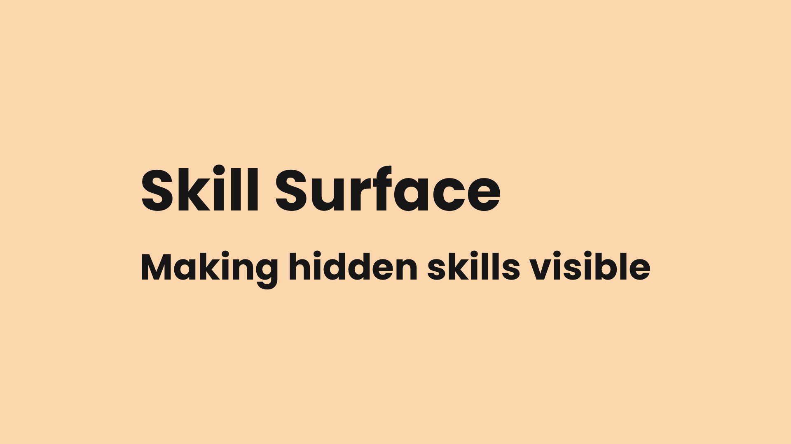

Making hidden skills visible
The skills that make you most effective at work are often the ones you've stopped noticing. I designed and built an AI-powered conversational coaching tool to fix that – one conversation at a time.
Date: 2026

The better you get at something, the less conscious effort it requires. When something feels effortless, we assume it's easy. We assume everyone can do it. So we don't name it, don't claim it, and definitely don't put it on a CV.
If you can't see a skill, you can't develop it deliberately. You can't explain it in an interview, or teach it to someone else.
I wanted to build something that could close that gap. Not a course or a checklist. A conversation.
I started with coaching, not technology. I needed a foundation that would hold up in real conversations. I chose a coaching model as the conversational backbone, combined with a skills taxonomy and competency model to create an assessment framework. These are fed into a Large Language Model (LLM) to create a natural, non-linear chat experience.
I designed for all professions, not just office workers. A mechanic diagnosing an intermittent fault and a project manager navigating stakeholder conflict are both demonstrating expertise. The taxonomy covers dozens of skills across categories from Craft & Technical Mastery, through to Safety & Compliance, Communication, and Strategic Thinking.
I built in two modes for two contexts. “Self” mode is for personal reflection – talking through your own experience. “Coach” mode is for someone helping another person develop. Same engine, different entry point.
I let conversations breathe. Early versions imposed a fixed structure. I replaced that with a checkpoint system – after each meaningful exchange, the user decides whether to continue or stop. A user might start talking about communication and end up surfacing leadership skills. That's not scope creep; it's the coach working.
Skill Surface is a deployed web application powered by Anthropic's Claude API. It began life as a Custom GPT and has been through two major (and many, many minor) iterations to reach its current form.
The user describes what they've been working on. Skill Surface listens, asks targeted questions, and helps identify which skills the user is demonstrating – and at what level.
Sessions take about 15-20 minutes. No accounts, no database, no server-side storage. A little JavaScript magic powers a save-to-PDF feature. Otherwise, when a user closes their browser tab, their conversation is gone – because it was never stored in the first place. Privacy by design.
Early versions of Skill Surface tried to keep conversations on a fixed track. It made the experience worse. But without any structure at all, sessions drifted – 90 minutes of interesting chat that never quite resolved into anything useful. The version that works is the one that holds just enough structure to be productive, but leaves enough space for genuine reflection to happen.
The first skills taxonomy I wrote felt comprehensive. It wasn't. It was built around office-based knowledge work because that's what I knew. It took several rounds of testing against very different roles to expose the gaps – and each revision surfaced new ones. I don't consider any version final now, just the most recently tested.
The first step isn't learning something new. It's recognising what you already know.
Try Skill Surface today.